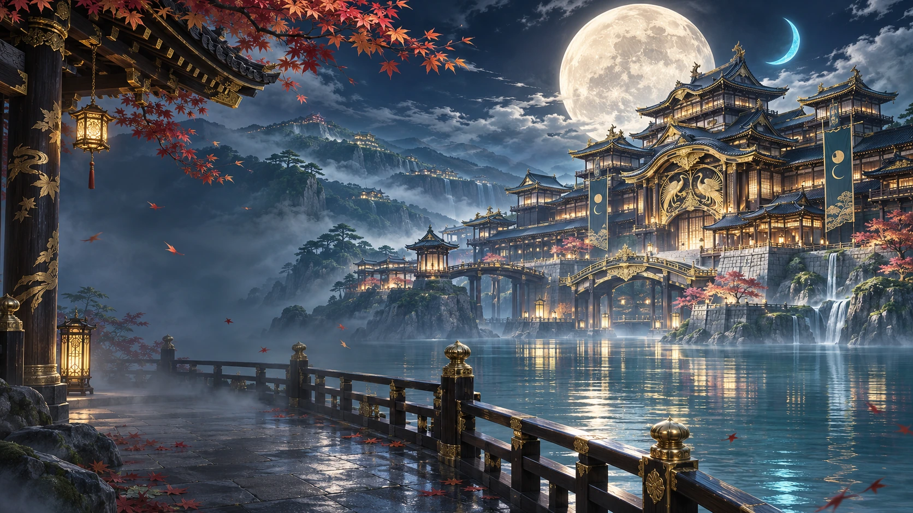

旅の記録
灯脈を辿り、双つの空へ。
物語は進めたところから再開できます。

月夜に紡ぐ、剣と魔法の物語
ARCHEIA OF THE TWIN MOONS
双つの月を仰ぎ、
灯の消えた道をゆく。
PC・スマホ対応 ／ ダウンロード不要
冒険の準備をしています…
灯脈を辿る旅路
双つの月の下、灯脈を辿って街道へ。
街を巡り、戦士と出会い、剣と魔法で道を切り拓く。
あなたの歩みが、この世界の続きを紡いでゆく。
近づいて斬り、技を繋ぎ、奥義で決める。
物語を旅する日も、闘技場で腕を磨く日も。
ブラウザを開けば、そこが冒険の入口になる。
月明かりの、その先へ
YOUR FIRST STEP
キーボードでも、タッチでも。あなたのスタイルで遊ぼう。
WELCOME, TRAVELER
双つの月を仰ぎ、灯の消えた道をゆく。
灯脈を辿り、双つの空へ。
物語は進めたところから再開できます。
イベントの情報を読み込んでいます…
双月の天儀を司る者
 人物と技を知る ↗
人物と技を知る ↗今日は、どんな冒険へ。
風景にも、物語が宿る。
次の一歩のために。
戦士を育て、遊ぶ環境を整える。
WASD：移動 ／ J：斬る ／ K：技A ／ U：技B ／ L：奥義 ／ Shift：構え ／ Space：跳ぶ ／ Esc：戻る・休む
移動中の技で派生、技の直後に同じ技で追加技。覚醒中の奥義は秘奥義に変化します。
スマホ・ゲームパッドの操作を見る ↗灯晶は戦いに勝つと手に入ります。一人につき五つの道、それぞれ五段まで。
世界の灯を探しています…
最大4人。各枠の「外す」で即解除、「変更」で別の仲間と入れ替え。「操作」で主人公（★）を指定できます。
一致する項目がありません。検索文字を変えてください。
参加者が揃うと部屋主が出撃できます。
世界の戦士と、双月の闘技場で一対一。
次のシルバーまで 200 pt
初戦の結果から世界順位が表示されます。
出撃戦士
まだ順位はありません。
| 順位 | プレイヤー | ランク | ポイント | 勝数 |
|---|
| 相手 | 結果 | ポイント |
|---|